만족도 조사
- 공공기관, 대학교 만족도 조사
- 내부·외부 고객이 서비스에 얼마나 만족하고 있는지 파악해, 개선이 필요한 지점을 찾아내는 조사입니다.
(주)코리아데이터월드는 만족도·정책수요·실태·학술연구 조사를 수행하는 리서치 전문기업입니다. 조사 설계와 자료 수집부터 분석·보고서까지, 의사결정에 필요한 근거를 함께 만듭니다.
조사 목적이 다르면 표본, 문항 구조, 산출 지표가 모두 달라집니다. 영역별로 필요한 결과물의 형태부터 확인하고 시작합니다.
선택실험(CE), 쌍대비교(AHP), 조건부가치측정(CVM), 전문가 합의(Delphi). 연구 방법론이 요구하는 화면과 출력 형식을 그대로 구현합니다.
방법론마다 응답자가 보는 화면과 분석에 넘겨야 할 데이터 형식이 다릅니다. 자체 플랫폼에서 문항 구조와 분석에 필요한 데이터 형식을 함께 설계합니다.
속성과 수준을 조합한 대안 중 하나를 고르게 하여, 지불의사와 속성별 중요도를 추정합니다.
다음 두 대안 중 어느 쪽을 선택하시겠습니까?
출력 · 더미변수 Long Format
두 항목을 9점 척도로 비교해 가중치를 산출하고, 응답 도중 일관성 비율을 바로 확인합니다.
두 평가기준 중 어느 쪽이, 얼마나 더 중요합니까?
산출 · 기준별 가중치 & 우선순위
제시금액을 응답자별로 균등 배분하고, 응답에 따라 2차 금액으로 분기합니다.
이 사업의 시행을 위해 가구당 연간 15,000원을 추가 부담할 의향이 있습니까?
출력 · 이중양분선택형 Long Format
라운드별 통계 요약을 응답 화면에 함께 보여 주어, 전문가가 의견을 조정할 근거를 제공합니다.
1라운드 결과입니다. 귀하의 응답을 유지하시겠습니까?
추적 · 라운드별 의견 변화 이력
문항 구조와 출력 형식을 검토해 과제에 맞는 구현 방법을 제안합니다.
연구계획서에 있는 그 문항,
화면으로 만들어 드립니다.
자문 · 방법론 검토부터 함께
문항 구성, 응답자 관리, 실시간 모니터링을 자체 플랫폼에서 연결합니다. 과제별 요구사항에 맞춰 설문 화면과 납품 형식을 조정합니다.
단일·복수선택, 척도, 리커트, 매트릭스, 순위, 숫자, 단답, 서술, 휴대전화 인증, 섹션 구분까지 조사 현장에서 실제로 쓰는 유형을 모두 지원합니다.
앞선 응답에 따라 뒤 문항을 건너뛰거나 다른 문항으로 이동시키고, 조사 대상 조건에 맞지 않으면 그 자리에서 응답을 종료합니다.
성별·연령·지역 등 집단별 목표 응답 수를 정해 두면 실시간으로 집계하고, 목표를 채운 집단은 자동으로 마감합니다.
응답자마다 고유 URL과 QR코드를 발급합니다. 응답 도중 창을 닫아도 이어서 작성할 수 있습니다.
HWPX·PDF 설문지를 올리면 AI가 문항을 읽어 유형별로 분류하고 초안을 만들어 둡니다. 담당자는 검토와 수정만 하면 됩니다.
응답 수와 완료율을 실시간으로 확인하고, 원시데이터를 XLSX·CSV로 내려받을 수 있습니다. 분석에 쓰실 코딩북도 함께 정리해 드립니다.
국책·지자체 연구기관, 지방자치단체, 대학, 기업까지 다양한 현장에서 조사를 수행해 왔습니다.
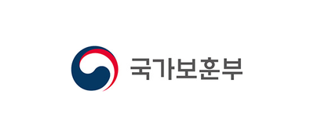
국가보훈부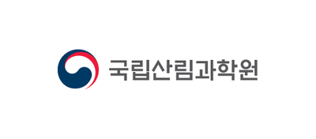
국립산림과학원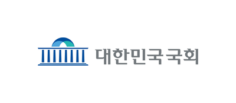
대한민국 국회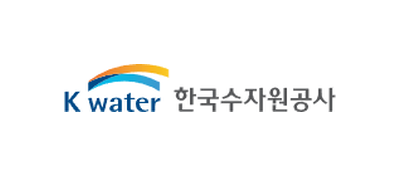
한국수자원공사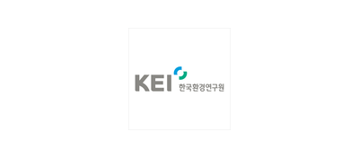
한국환경연구원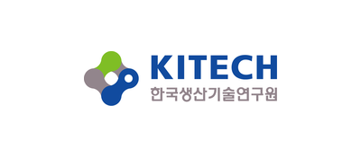
한국생산기술연구원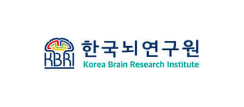
한국뇌연구원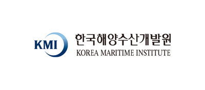
한국해양수산개발원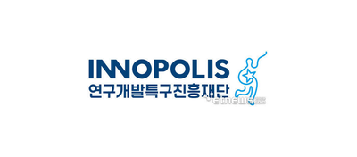
연구개발특구진흥재단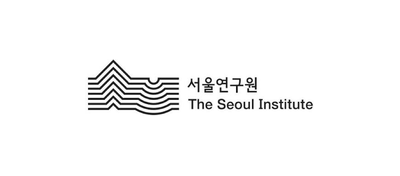
서울연구원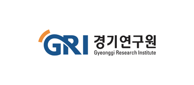
경기연구원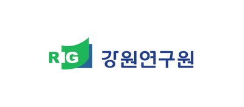
강원연구원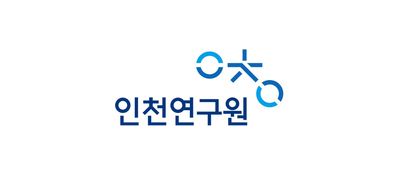
인천연구원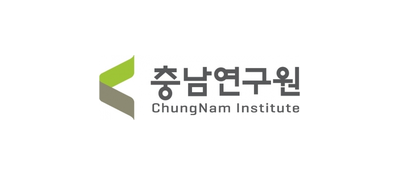
충남연구원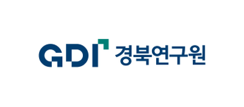
경북연구원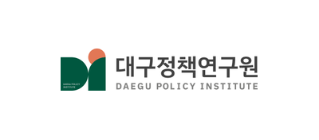
대구정책연구원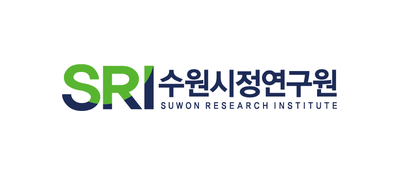
수원시정연구원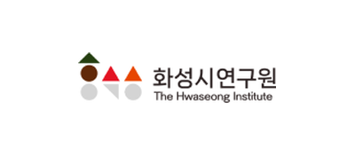
화성시연구원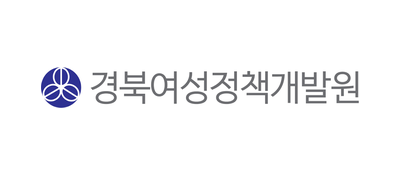
경북여성정책개발원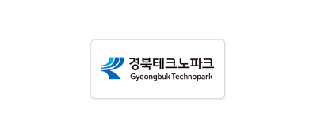
경북테크노파크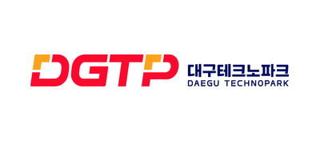
대구테크노파크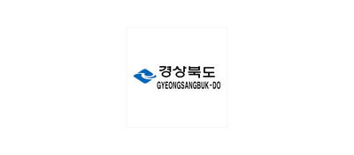
경상북도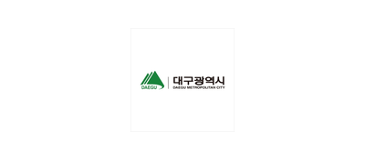
대구광역시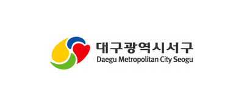
대구광역시 서구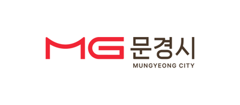
문경시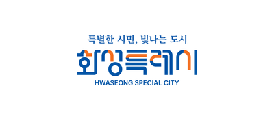
화성특례시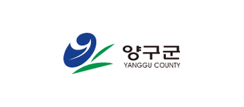
양구군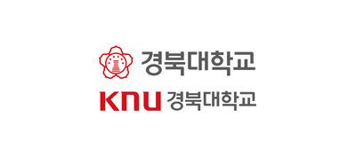
경북대학교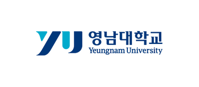
영남대학교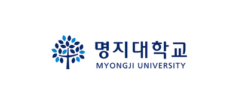
명지대학교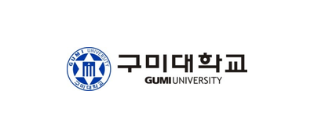
구미대학교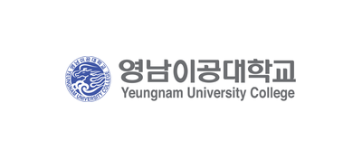
영남이공대학교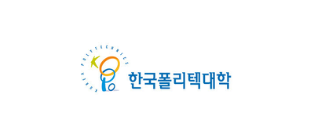
한국폴리텍대학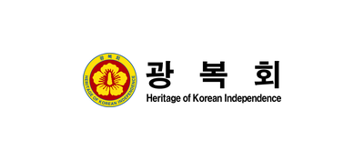
광복회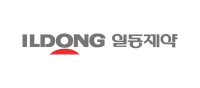
일동제약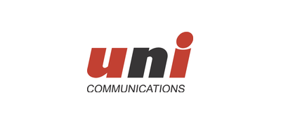
유니기획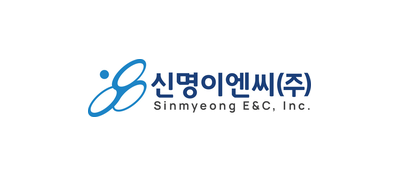
신명이엔씨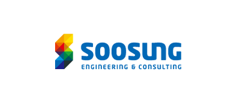
수성엔지니어링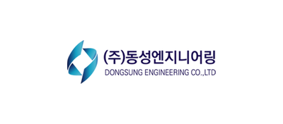
동성엔지니어링코리아데이터월드는 과업 완료 후 외부고객 만족도 조사를 실시하고 있습니다.
문항이 아직 확정되지 않아도 괜찮습니다. 무엇을 알고 싶으신지, 그 결과를 어디에 쓰실지부터 말씀해 주세요.